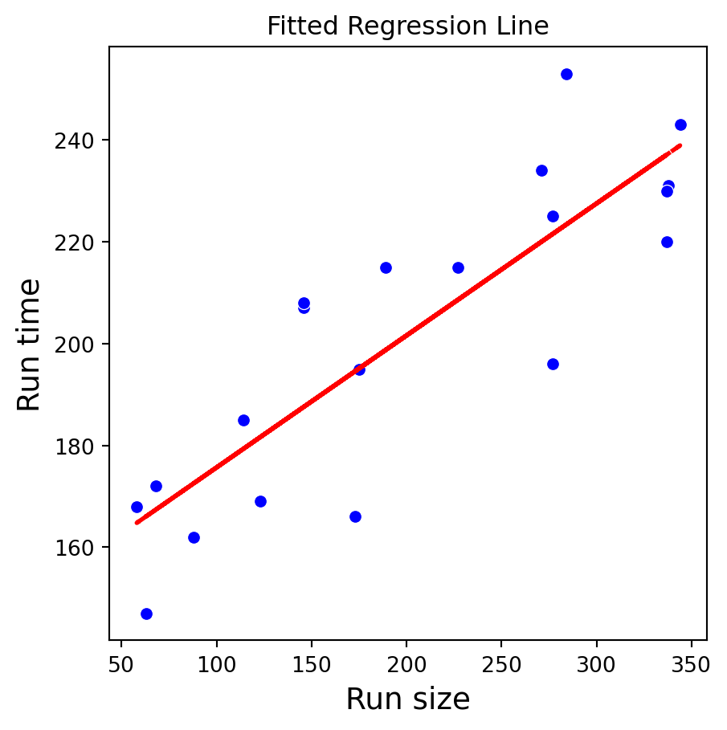
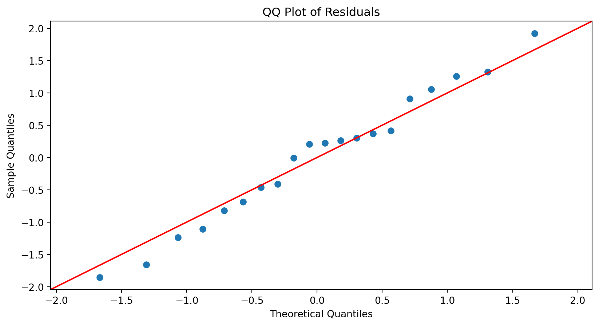

Model Evaluation and Inference
IN5148: Statistics and Data Science with Applications in Engineering
Department of Industrial Engineering
Agenda
- Residual analysis
- Inference about individual \(\beta\)’s using t-tests
- Multiple and adjusted \(R^2\) statistics
Load the libraries
Let’s import statsmodels into Python together with other relevant libraries.
Residual analysis
Questions
How can we estimate \(\beta_0, \beta_1, \ldots, \beta_p\) and \(\sigma^2\)?
How can we validate the model and all its assumptions?
How can we make inferences about \(\beta_0, \beta_1, \ldots, \beta_p\)?
If some assumptions are not met, can we do something about it?
How can we make predictions of future responses using the multiple linear regression model?
Multiple linear regression model
\[Y_i = \beta_0 + \beta_1 X_{i1} + \cdots + \beta_p X_{ip} + \epsilon_i\]
- \(p\) is the number of predictors.
- \(n\) is the number of observations.
- \(X_{ij}\) is the i-th observation of the j-th predictor.
- \(Y_{i}\) is the i-th observation of the response.
- \(\epsilon_i\) is the i-th random error.
Assumptions
The error \(\epsilon_i\)’s must then satisfy the following assumptions:
- On average, they are close to zero for any value of the predictors \(X_j\).
- For any value of the predictor \(X_j\), the dispersion or variance is constant and equal to \(\sigma^2\).
- The \(\epsilon_i\)’s are all independent from each other.
- The \(\epsilon_i\)’s follow normal distribution with mean 0 and variance \(\sigma^2\).
Residuals
The errors \(\epsilon_1, \ldots, \epsilon_n\) are not observed. To overcome this issue, we use the residuals of our model.
Suppose that the multiple linear regression model is correct and consider the fitted responses \(\hat{Y}_i = \hat{\beta}_0 + \hat{\beta}_1 X_{i1} + \cdots + \hat{\beta}_p X_{ip}\), where \(\hat{\beta}_{j}\) is the least squares estimator for the j-th predictor.
We define the residuals \(\hat{\epsilon}_i = Y_i - \hat{Y}_i\), \(i = 1, \ldots, n.\)
If the model structure is correctly specified and assuming that the least-squares estimates \(\hat{\beta}_j\)’s are close to the true \(\beta_j\)’s, respectively, we have that
\[\hat{\epsilon}_i = Y_i - \hat{Y}_i = Y_i - \hat{\beta}_0 + \hat{\beta}_1 X_{i1} + \cdots + \hat{\beta}_p X_{ip} \approx \epsilon_i\]
So, the residuals \(\hat{\epsilon}_i\) should resemble the random errors \(\epsilon\).
To evaluate the assumption of a multiple linear regression model, we use a Residual analysis.
Residual Analysis
To check the validity of these assumptions, we will follow a graphical approach. Specifically, we will construct three informative plots of the residuals.
Residuals vs Fitted Values Plot. To assess the structure of the model and check for constant variance
Residuals Vs Time Plot. To check independence.
Normal Quantile-Quantile Plot. To assess if the residuals follow a normal distribution
Example 1
This example is inspired by Foster, Stine and Waterman (1997, pages 191–199).
The data are in the form of the time taken (in minutes) for a production run, \(Y\), and the number of items produced, \(X\), for 20 randomly selected orders as supervised by a manager.
We wish to develop an equation to model the relationship between the run time (\(Y\)) and the run size (\(X\)).
Dataset
The dataset is in the file “production.xlsx”.
Linear regression model
\[ Y_i = \beta_0 + \beta_1 X_i +\epsilon_i \]
where \(X_i\) is the run size and \(Y_i\) is the run time for the \(i\)-th observation, \(i = 1, \ldots, 20\).
We fit the model in Python as follows.
# Defining the predictor (X) and the response variable (Y).
prod_Y_train = production_data['RunTime']
prod_X_pred = production_data['RunSize']
prod_X_train = sm.add_constant(prod_X_pred)
# Fitting the simple linear regression model.
regr = sm.OLS(prod_Y_train, prod_X_train)
linear_model = regr.fit()Estimated model
\[ \hat{Y}_i = \hat{\beta}_0 + \hat{\beta}_1 X_i = 149.75 + 0.26 X_i, \]
where \(\hat{Y}_i\) is the predicted or fitted value of run time for the \(i\)-th observation, \(i = 1, \ldots, 20\).
The residuals of this estimated model are \(\hat{\epsilon}_i = Y_i - \hat{Y}_i\).
Calculation of fitted values and residuals
Recall that we can calculate the predicted values and residuals using commands from statsmodels.
Residuals vs Fitted Values Plot
Intuition behind …
the Residuals versus Fitted Values plot.

Residuals vs Fitted Values
Code
plt.figure(figsize=(5, 5))
sns.scatterplot(x='RunSize', y='RunTime', data=production_data, color='blue')
plt.plot(production_data['RunSize'], lr_model.fittedvalues, color='red', linestyle='--', linewidth=2)
plt.title("Fitted Regression Line")
plt.xlabel("Run size", fontsize = 14)
plt.ylabel("Run time", fontsize = 14)
plt.show()
Code

Residuals vs Fitted Values
- If there is a trend, the model is misspecified.
- A “funnel” shape indicates that the assumption of constant variance is not met.

Examples of plots that do not support the conclusion of constant variance.

Another example.

The phenomenon of non-constant variance is called heteroscedasticity.
Residuals vs Time Plot
Residuals vs Time Plot
By “time,” we mean that time the observation was taken or the order in which it was taken. The plot should not show any structure or pattern in the residuals.
Dependence on time is a common source of lack of independence, but other plots might also detect lack of independence.
Ideally, we plot the residuals versus each variable of interest we could think of, either included or excluded in the model.
Assessing the assumption of independence is hard in practice.
Code

Examples of plots that do and do not support the independence assumption.

Normal Quantile-Quantile Plot
Checking for normality
This assumption is generally checked by looking at the distribution of the residuals.
Two plots:
Histogram.
Normal Quantile-Quantile Plot (also called normal probability plot).
Histogram
Ideally, the histogram resembles a normal distribution around 0. If the number of observations is small, the histogram may not be an effective visualization.
Normal Quantile-Quantile (QQ) Plot
A normal QQ plot is helpful for deciding whether a sample was drawn from a distribution that is approximately normal.
- First, let \(\hat{\epsilon}_{[1]}, \hat{\epsilon}_{[2]}, \ldots, \hat{\epsilon}_{[n]}\) be the residuals ranked in an increasing order, where \(\hat{\epsilon}_{[1]}\) is the minimum and \(\hat{\epsilon}_{[n]}\) is the maximum. These points define the sample percentiles (or quantiles) of the distribution of the residuals.
- Next, calculate the theoretical percentiles of a (standard) Normal distribution calculated using Python.
The normal QQ plot displays the (sample) percentiles of the residuals versus the percentiles of a normal distribution.
If these percentiles agree with each other, then they would approximate a straight line.
The straight line is usually determined visually, with emphasis on the central values rather than the extremes.
For a nice explanation, see this YouTube video.
QQ plot in Python
To construct a QQ plot, we use the function qqplot() statsmodels library.
Substantial departures from a straight line indicate that the distribution is not normal.
<Figure size 672x384 with 0 Axes>
This plot suggests that the residuals are consistent with a Normal curve.
<Figure size 672x384 with 0 Axes>
Normal probability plots for data sets following various distributions. 100 observations in each data set.

Consequences of faulty assumptions
- If the model structure is incorrect, the estimated coefficients \(\hat{\beta}_j\) will be biased and the predictions \(\hat{Y}_i\) will be inaccurate.
- If the residuals do not follow a normal distribution, we have two cases:
- If sample size is large, we still get accurate p-values for the t-tests (discussed later) for the coefficients thanks to the Central Limit Theorem.
- However, the t-tests and all inference tools are invalidated.
If the residuals do not have constant variance, then the linear model is incorrect and everything falls apart!
If the residuals are dependent, then the linear model is incorrect and everything falls apart!
Inference about individual \(\beta\)’s using t-tests
Questions
How can we estimate \(\beta_0, \beta_1, \ldots, \beta_p\) and \(\sigma^2\)?
How can we validate the model and all its assumptions?
How can we make inferences about \(\beta_0, \beta_1, \ldots, \beta_p\)?
If some assumptions are not met, can we do something about it?
How can we make predictions of future responses using the multiple linear regression model?
Example 2
Let’s consider the “auto.xlsx” dataset.
Let’s assume that we want to study the following model.
\[ Y_i = \beta_0 + \beta_1 X_{i1}+ \beta_2 X_{i2}+ \epsilon_i, \]
where \(Y_i\) is the mpg, \(X_{i1}\) is the weight, and \(X_{i2}\) is the acceleration of the \(i\)-th car, \(i = 1, \ldots, 392\).
Research question
Do the weight and acceleration have a significant association with the mpg of a car?
The two cultures of statistical models
Inference: develop a model that fits the data well. Then make inferences about the data-generating process based on the structure of such model.
Prediction: Silent about the underlying mechanism generating the data and allow for many predictive algorithms, which only care about accuracy of predictions.
They overlap very often.
The least squares estimators \(\hat{\beta}_0, \hat{\beta}_1, \ldots, \hat{\beta}_p\) are subject to uncertainty, since they are calculated based on a random sample of data.
Therefore, assessing the amount of the uncertainty in these estimators is important. To this end, we use hypothesis tests on individual coefficients.
Hypothesis test
A statistical hypothesis is a statement about the coefficients of a model.
In our case, we are interested in testing:
\(H_0: \beta_j = 0\) v.s. \(H_1: \beta_j \neq 0\) (Two-tailed Test)
- Rejecting \(H_0\) (in favor of \(H_1\)) implies that the predictor has a significant association with the response.
- Not rejecting \(H_0\) implies that the predictor does not have a significant association with the response.
\(H_0: \beta_j = 0\) v.s. \(H_1: \beta_j \neq 0\) (Two-tailed Test)
Testing this hypothesis consists of the following steps:
- Take a random sample.
- Compute the appropriate test statistic.
- Reject or fail to reject the null hypothesis based on a computed p-value.
Step 1. Random sample
The random sample is the data we use to train or fit the model.
Step 2. Test statistic
The test statistic is
\[t_0 = \frac{\hat{\beta}_{j}}{\sqrt{ \hat{v}_{jj}} }\]
- \(\hat{\beta}_j\) is the least squares estimate of the true coefficient \(\beta_j\).
- \(\sqrt{\hat{v}_{jj}}\) is the standard error of the estimate \(\hat{\beta}_j\) calculated using Python.
Recall that we obtain the least squares estimates (\(\hat{\beta}_{j}\)) in Python using:
const 41.095329
weight -0.007293
acceleration 0.261650
dtype: float64Later, we will see how to obtain the standard error of the estimate \(\hat{\beta}_j\).
\[t_0 = \frac{\hat{\beta}_{j}}{\sqrt{ \hat{v}_{jj}} }\]
We like this statistic because it follows a well-known distribution.
If the null hypothesis (\(H_0: \beta_j = 0\)) is true, the statistic \(t_0\) follows a \(t\) distribution with \(n-p-1\) degrees of freedom
Remember that \(n\) is the number of observations and \(p\) the number of predictors.
t distribution
This distribution is also known as the student’s t-distribution.
It was invented by William Gosset when he worked at the Guinness Brewery in Ireland.
It has one parameter \(\nu\) which generally equals a number of degrees of freedom.
The parameter \(\nu\) controls the shape of the distribution.

The t-distribution resembles a standard normal distribution when \(\nu\) goes to infinity.

Step 3. Calculate the p-value
The p-value is the probability that the \(t\) test statistic will get a value that is at least as extreme as the observed \(t_0\) value when the null hypothesis (\(H_0\)) is true.
For \(H_0: \beta_j = 0\) v.s. \(H_1: \beta_j \neq 0\), the p-value is calculated using both tails of the \(t\) distribution. It is the blue area under the curve below.

We use the two tails because \(H_1\) includes the possibility that the value of \(\beta_j\) is positive or negative.
The p-value is not the probability that \(H_0\) is true
Since the p-value is a probability, and since small p-values indicate that \(H_0\) is unlikely to be true, it is tempting to think that the p-value represents the probability that \(H_0\) is true.
This is not the case!
Remember that the p-value is the probability that the \(t\) test statistic will get a value that is at least as extreme as the observed \(t_0\) value when \(H_0\) is true.
How small must the p-value be to reject \(H_0\)?
Answer: Very small!
But, how small?
Answer: Very small!
But, tell me, how small?
Answer: Okay, it must be less than a value called \(\alpha\) which is usually 0.1, 0.05, or 0.01.
Thank you!

Decision
For a significance level of \(\alpha = 0.05\):
If the p-value is smaller than \(\alpha\), we reject \(H_0: \beta_j = 0\) in favor of \(H_1: \beta_j \neq 0\).
If the p-value is larger than \(\alpha\), we do not reject \(H_0: \beta_j = 0\).
No scientific basis for this advice. In practice, report the p-value and explore the data using descriptive statistics.

t-tests in Python
We obtain the t-tests of the coefficients using the function summary() together with the linear_model object.
OLS Regression Results
==============================================================================
Dep. Variable: mpg R-squared: 0.700
Model: OLS Adj. R-squared: 0.698
Method: Least Squares F-statistic: 453.2
Date: Wed, 21 Jan 2026 Prob (F-statistic): 2.43e-102
Time: 11:45:51 Log-Likelihood: -1125.4
No. Observations: 392 AIC: 2257.
Df Residuals: 389 BIC: 2269.
Df Model: 2
Covariance Type: nonrobust
================================================================================
coef std err t P>|t| [0.025 0.975]
--------------------------------------------------------------------------------
const 41.0953 1.868 21.999 0.000 37.423 44.768
weight -0.0073 0.000 -25.966 0.000 -0.008 -0.007
acceleration 0.2617 0.086 3.026 0.003 0.092 0.432
==============================================================================
Omnibus: 31.397 Durbin-Watson: 0.818
Prob(Omnibus): 0.000 Jarque-Bera (JB): 39.962
Skew: 0.632 Prob(JB): 2.10e-09
Kurtosis: 3.922 Cond. No. 2.67e+04
==============================================================================
Notes:
[1] Standard Errors assume that the covariance matrix of the errors is correctly specified.
[2] The condition number is large, 2.67e+04. This might indicate that there are
strong multicollinearity or other numerical problems.Table of t-tests
| coef | std err | t | P>\(|t|\) | \([0.025\) | \(0.975 ]\) | |
|---|---|---|---|---|---|---|
| const | 41.0953 | 1.868 | 21.999 | 0.000 | 37.423 | 44.768 |
| weight | -0.0073 | 0.000 | -25.966 | 0.000 | -0.008 | -0.007 |
| acceleration | 0.2617 | 0.086 | 3.026 | 0.003 | 0.092 | 0.432 |
The column std err contains the values of the estimated standard error (\(\sqrt{ \hat{v}_{jj}}\)) of the estimates \(\hat{\beta}_j\). They represent the variability in the estimates.
| coef | std err | t | P>\(|t|\) | \([0.025\) | \(0.975 ]\) | |
|---|---|---|---|---|---|---|
| const | 41.0953 | 1.868 | 21.999 | 0.000 | 37.423 | 44.768 |
| weight | -0.0073 | 0.000 | -25.966 | 0.000 | -0.008 | -0.007 |
| acceleration | 0.2617 | 0.086 | 3.026 | 0.003 | 0.092 | 0.432 |
The column t contains the values of the observed statistic \(t_0\) for the hypothesis tests.
| coef | std err | t | P>\(|t|\) | \([0.025\) | \(0.975 ]\) | |
|---|---|---|---|---|---|---|
| const | 41.0953 | 1.868 | 21.999 | 0.000 | 37.423 | 44.768 |
| weight | -0.0073 | 0.000 | -25.966 | 0.000 | -0.008 | -0.007 |
| acceleration | 0.2617 | 0.086 | 3.026 | 0.003 | 0.092 | 0.432 |
The column P>|t| contains the p-values for the hypothesis tests.
Since the p-value is smaller than \(\alpha = 0.05\), we reject \(H_0\) for acceleration and weight. Therefore, weight and acceleration have a significant association with the mpg of a car.
| coef | std err | t | P>\(|t|\) | \([0.025\) | \(0.975 ]\) | |
|---|---|---|---|---|---|---|
| const | 41.0953 | 1.868 | 21.999 | 0.000 | 37.423 | 44.768 |
| weight | -0.0073 | 0.000 | -25.966 | 0.000 | -0.008 | -0.007 |
| acceleration | 0.2617 | 0.086 | 3.026 | 0.003 | 0.092 | 0.432 |
The columns \([0.025\) and \(0.975]\) show the limits of a 95% confidence interval on each true coefficient \(\beta_j\). This interval contains the true parameter value with a confidence of 95%.
Multiple and adjusted \(R^2\) statistics
Total Sum of Squares
Let’s consider the total sum of squares
\[SS_{Total} = \sum_{i=1}^{n} (Y_i - \bar{Y})^2 \text{ where } \bar{Y} = \sum_{i=1}^{n} \frac{Y_i}{n}.\]
This quantity measures the total variation of the response.
In other words, it is the amount of variability inherent in the response before we fit a regression model.
Residual Sum of Squares
Let’s also consider the residual sum of squares
\[RSS = \sum_{i=1}^{n} (Y_i - \hat{Y}_i)^2.\]
RSS is the sum of squares due to residuals of the linear regression model; or, residual variation left unexplained by this model.
The better the predictions of the model, the smaller the RSS value.
Coefficient of determination
\[R^2 = 1 - \frac{RSS}{SS_{total}}\]
\(R^2\) measures the “proportion of variation in the response explained by the full regression model.”

\[R^2 = 1 - \frac{RSS}{SS_{total}}\]
What would you conclude about RSS if \(R^2 = 1\)?
In this case, \(RSS = 0\) and the model fits the data perfectly.
If \(R^2\) is small, then large RSS: lots of scatter and the model’s fit is not good.
It turns out that \(R^2\) is the square of the correlation between the observed (\(Y_i\)) and predicted (\(\hat{Y}_i\)) responses.
Remarks on \(R^2\)
The statistic \(R^2\) should be used with caution because it is always possible to make it unity by simply adding more and more predictors.
If \(R^2\) is large, it does not necessarily imply that the full model will provide accurate predictions of future observations.

Adjusted \(R^2\) statistic
Adjusted \(R^2\) is a better measure to decide whether to add a new variable into the model or not. It is:
\[R_{adj}^2=1-\frac{RSS/(n-k-1)}{SS_{total}/(n-1)},\]
where \(k\) is the number of variables in the model. For the full model, \(k = p\).
- If adjusted \(R^2\) goes down or stays the same, then new variable is not important.
- If adjusted \(R^2\) goes up, then it is probably useful.

Why is adjusted \(R^2\) more useful than \(R^2\) for adding new variables?
\[R_{adj}^2=1-\frac{RSS/(n-k-1)}{SS_{total}/(n-1)}\]
- As we explain more variability, the numerator gets smaller and adjusted \(R^2\) gets closer to 1. So, we want to make the numerator small.
- If we add a “good” variable to the model, RSS will go down. However, \(n - k - 1\) will decrease a little bit (because \(k\) is now bigger by 1.) So the numerator does not go down by as much as it does in ‘plain’ \(R^2\).
\[R_{adj}^2=1-\frac{RSS/(n-k-1)}{SS_{total}/(n-1)}\]
If we add a useless predictor, RSS goes down a tiny bit, but because we divide by \(n - k - 1\), the numerator might actually get bigger or change very little.
So, adjusted \(R^2\) is a better measure of whether adding a new predictor is an improvement. If adjusted \(R^2\) goes down or stays the same, the new predictor is irrelevant. If it goes up, then it is probably useful.
In Python
To show the \(R^2\) value, we use the rsquared argument of the linear_model object.
To show the adjusted \(R^2\) value, we use the rsquared argument of the linear_model object.
Model building
Model building refers to a set of techniques to reduce the full model to one that only includes significant predictors.
It is more a deconstruction than building an actual model, since the full model must be a valid one to begin with. Specifically, the full model must provide residuals that satisfy all the assumptions (1)-(4).
After we have obtained a satisfactory full model, we can start the model building process.
Two model building techniques
Adjusted \(R^2\) statistic. We add one variable at a time and see the change in adjusted \(R^2\) statistic. If the value decreases, then we stop and evaluate the resulting model.
T-tests on the individual coefficients. If \(H_0\) is not rejected, this indicates that the predictor \(X_j\) can be deleted from the model. We can then delete the predictor and refit the model. We can repeat this process several times until we reach a model in which all variables are significant.
Return to main page

Tecnologico de Monterrey
Comments
These data are truly Normally distributed. But note that we still see deviations. These are entirely due to chance.
When \(n\) is relatively small, you tend to see deviations, particularly in the tails.